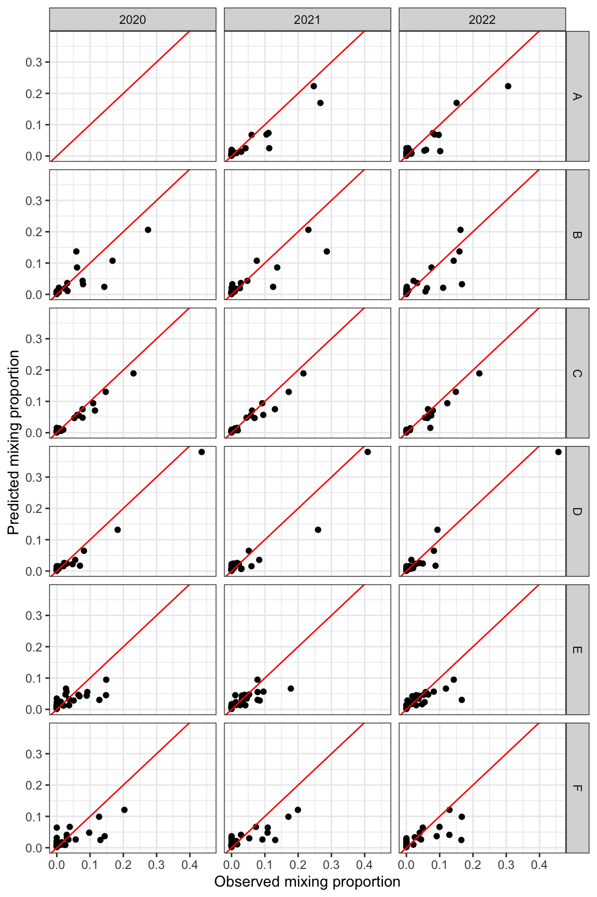

Purpose: quantify the degree to which tributary contributions to the mainstem Snake River population of YCT change over space and/or time.
9.1 Data
Load GSI output from rubias
Code
gsi_dat<-readRDS("/Users/jeffbaldock/Library/CloudStorage/GoogleDrive-jbaldock@uwyo.edu/Shared drives/wyo-coop-baldock/UWyoming/Snake River Cutthroat/Analyses/Snake River GSI Quarto/GSI Analysis/By Section and Year/UpperSnake_GSI_SectionYear_output.RDS")
Create data frame of bootstrap-corrected mixing abundance by multiplying bootstrap-corrected mixing proportions by section and year-specific sample size. Because we used the bootstrap approach to correct mixing proportions by estimated bias in reporting unit contributions (see Chapters 3 and 5), we cannot just sum the individual posteriors as in Jensen et al. (2022). Instead, simply multiply bootstrap-corrected mixing proportions by compsition sample size to get corrected abundance. This is functionally the same as the approach in Jensen et al. (2022).
Code
# abundance for zoidgsi_bscorr<-gsi_dat$bootstrapped_proportions%>%left_join(gsi_dat$indiv_posteriors%>%group_by(indiv, mixture_collection)%>%summarize(n =n())%>%group_by(mixture_collection)%>%summarize(sampsize =n()))%>%mutate(bscorrnum =bs_corrected_repunit_ppn*sampsize, section =str_sub(mixture_collection, end =-6), year =str_sub(mixture_collection, start =-4))%>%select(section, year, repunit, bscorrnum)%>%spread(key =repunit, value =bscorrnum)gsi_bscorr
# proportions for PCA vizgsi_bscorr2<-gsi_dat$bootstrapped_proportions%>%left_join(gsi_dat$indiv_posteriors%>%group_by(indiv, mixture_collection)%>%summarize(n =n())%>%group_by(mixture_collection)%>%summarize(sampsize =n()))%>%mutate(bscorrnum =bs_corrected_repunit_ppn, section =str_sub(mixture_collection, end =-6), year =str_sub(mixture_collection, start =-4))%>%select(section, year, repunit, bscorrnum)%>%spread(key =repunit, value =bscorrnum)%>%mutate(section2 =factor(recode(section, "snake_pacificdeadmans"="A","snake_deadmansmoose"="B","snake_moosewilson"="C","snake_wilsonsouthpark"="D","snake_southparkastoria"="E","snake_astoriawesttable"="F"), levels =c("A", "B", "C", "D", "E", "F")))%>%relocate(section2, .after =section)
Construct data (bootstrapped mixing abundance) and design (section, year) matrics for zoid
Code
data_matrix<-gsi_bscorr[,-c(1:2)]design_matrix<-gsi_bscorr[,c(1,2)]design_matrix$section<-as.factor(design_matrix$section)design_matrix$year<-as.factor(design_matrix$year)design_matrix$y<-1# dummy variable as in Jensen et al. 2022 and zoid package vignette
9.1.1 Visualize data with PCA
Run PCA on bootstrap-corrected proportional contribution. Not recommended to run PCA on proportional data without transformation, but we do this here just to visualize general patterns in the data
Code
# run PCAgsi_pca<-prcomp(gsi_bscorr2[,-c(1:3)])# view big driversgsi_pca$rotation[gsi_pca$rotation[,1]>0.2|gsi_pca$rotation[,1]<-0.2|gsi_pca$rotation[,2]>0.2|gsi_pca$rotation[,2]<-0.2 ,c(1:2)]
As expected, sections clump together with no major pattern by year. Contributions from Upper Bar BC and Blacktail are characteristic of sections A and B (upstream); Fish and Mosquito of section D; and Bailey, Cabin and Willow of sections E and F
9.2 Model using ZOID
Fit candidate models
Code
# Section * Yearfitz1<-fit_zoid(formula =y~section*year, design_matrix =design_matrix, data_matrix =as.matrix(data_matrix), overdispersion =FALSE, chains =3, iter =4000, posterior_predict =TRUE, moment_match =TRUE)# Section + Yearfitz2<-fit_zoid(formula =y~section+year, design_matrix =design_matrix, data_matrix =as.matrix(data_matrix), overdispersion =FALSE, chains =3, iter =4000, posterior_predict =TRUE, moment_match =TRUE)# Sectionfitz3<-fit_zoid(formula =y~section, design_matrix =design_matrix, data_matrix =as.matrix(data_matrix), overdispersion =FALSE, chains =3, iter =4000, posterior_predict =TRUE, moment_match =TRUE)# Yearfitz4<-fit_zoid(formula =y~year, design_matrix =design_matrix, data_matrix =as.matrix(data_matrix), overdispersion =FALSE, chains =3, iter =4000, posterior_predict =TRUE, moment_match =TRUE)# Nullfitz5<-fit_zoid(formula =y~1, design_matrix =design_matrix, data_matrix =as.matrix(data_matrix), overdispersion =FALSE, chains =3, iter =4000, posterior_predict =TRUE, moment_match =TRUE)# save model objectssaveRDS(fitz1, file ="/Users/jeffbaldock/Library/CloudStorage/GoogleDrive-jbaldock@uwyo.edu/Shared drives/wyo-coop-baldock/UWyoming/Snake River Cutthroat/Analyses/Snake River GSI Quarto/Obj1 Spatiotemporal Var/Candidate model outputs/ZOID_CandidateModel_1.rds")saveRDS(fitz2, file ="/Users/jeffbaldock/Library/CloudStorage/GoogleDrive-jbaldock@uwyo.edu/Shared drives/wyo-coop-baldock/UWyoming/Snake River Cutthroat/Analyses/Snake River GSI Quarto/Obj1 Spatiotemporal Var/Candidate model outputs/ZOID_CandidateModel_2.rds")saveRDS(fitz3, file ="/Users/jeffbaldock/Library/CloudStorage/GoogleDrive-jbaldock@uwyo.edu/Shared drives/wyo-coop-baldock/UWyoming/Snake River Cutthroat/Analyses/Snake River GSI Quarto/Obj1 Spatiotemporal Var/Candidate model outputs/ZOID_CandidateModel_3.rds")saveRDS(fitz4, file ="/Users/jeffbaldock/Library/CloudStorage/GoogleDrive-jbaldock@uwyo.edu/Shared drives/wyo-coop-baldock/UWyoming/Snake River Cutthroat/Analyses/Snake River GSI Quarto/Obj1 Spatiotemporal Var/Candidate model outputs/ZOID_CandidateModel_4.rds")saveRDS(fitz5, file ="/Users/jeffbaldock/Library/CloudStorage/GoogleDrive-jbaldock@uwyo.edu/Shared drives/wyo-coop-baldock/UWyoming/Snake River Cutthroat/Analyses/Snake River GSI Quarto/Obj1 Spatiotemporal Var/Candidate model outputs/ZOID_CandidateModel_5.rds")
Load fitted model objects
Code
fitz1<-readRDS("/Users/jeffbaldock/Library/CloudStorage/GoogleDrive-jbaldock@uwyo.edu/Shared drives/wyo-coop-baldock/UWyoming/Snake River Cutthroat/Analyses/Snake River GSI Quarto/Obj1 Spatiotemporal Var/Candidate model outputs/ZOID_CandidateModel_1.rds")fitz2<-readRDS("/Users/jeffbaldock/Library/CloudStorage/GoogleDrive-jbaldock@uwyo.edu/Shared drives/wyo-coop-baldock/UWyoming/Snake River Cutthroat/Analyses/Snake River GSI Quarto/Obj1 Spatiotemporal Var/Candidate model outputs/ZOID_CandidateModel_2.rds")fitz3<-readRDS("/Users/jeffbaldock/Library/CloudStorage/GoogleDrive-jbaldock@uwyo.edu/Shared drives/wyo-coop-baldock/UWyoming/Snake River Cutthroat/Analyses/Snake River GSI Quarto/Obj1 Spatiotemporal Var/Candidate model outputs/ZOID_CandidateModel_3.rds")fitz4<-readRDS("/Users/jeffbaldock/Library/CloudStorage/GoogleDrive-jbaldock@uwyo.edu/Shared drives/wyo-coop-baldock/UWyoming/Snake River Cutthroat/Analyses/Snake River GSI Quarto/Obj1 Spatiotemporal Var/Candidate model outputs/ZOID_CandidateModel_4.rds")fitz5<-readRDS("/Users/jeffbaldock/Library/CloudStorage/GoogleDrive-jbaldock@uwyo.edu/Shared drives/wyo-coop-baldock/UWyoming/Snake River Cutthroat/Analyses/Snake River GSI Quarto/Obj1 Spatiotemporal Var/Candidate model outputs/ZOID_CandidateModel_5.rds")
write.csv(as.data.frame(lc), "/Users/jeffbaldock/Library/CloudStorage/GoogleDrive-jbaldock@uwyo.edu/Shared drives/wyo-coop-baldock/UWyoming/Snake River Cutthroat/Analyses/Snake River GSI Quarto/Obj1 Spatiotemporal Var/ZOID_ModelSelection_LOOCV_Output.csv")# set top modeltop_mod<-fitz3
9.2.2 PP check
Join posterior predicted proportional contributions to original data
Code
# get model predictioned proportionspreds<-get_fitted(top_mod)# join to observed proportionsobspred<-gsi_bscorr2%>%gather(bailey_NA:willow_NA, key ="repunit", value ="bs_ppn")%>%mutate(pred_mean =preds$mean, pred_median =preds$median, pred_lo =preds$lo, pred_hi =preds$hi)
Plot predictions by observed, all together, shape by year and color by section. Note that the 0’s are not very well predicted, which may drive lower than observed predictions from reporting groups contributing a lot to the Snake.
Plot predictions by observed, facet by year and section
Code
obspred%>%ggplot(aes(x =bs_ppn, y =pred_median))+geom_point()+geom_abline(intercept =0, slope =1, col ="red")+facet_grid(section2~year)+xlab("Observed mixing proportion")+ylab("Predicted mixing proportion")+theme_bw()

9.2.3 Plot model output
Organize data and ensure proportions sum to 1 for each section
Code
gps<-read_csv("/Users/jeffbaldock/Library/CloudStorage/GoogleDrive-jbaldock@uwyo.edu/Shared drives/wyo-coop-baldock/UWyoming/Snake River Cutthroat/Analyses/Snake River GSI Quarto/Landscape Covariates/Location Data/RepUnit_LatLong.csv")# summarize datafit_vals<-get_fitted(top_mod)mixdes<-design_matrix%>%select(section, year)%>%mutate(obs =c(1:17))tribdes<-tibble(group =1:52, repunit =names(data_matrix))fit_sum<-fit_vals%>%left_join(mixdes)%>%left_join(tribdes)%>%group_by(section, repunit)%>%summarize(mean =unique(mean), median =unique(median), lo =unique(lo), hi =unique(hi))%>%ungroup()%>%left_join(gps)# check sum to 1fit_sum%>%group_by(section)%>%summarize(tot =sum(mean))# check: these should sum to 1
Plot posterior predicted proportional contribution by reporting groups, across sections. Compare to figures in Chapter 5 - GSI Analysis. Note that all we are doing here is estimating section-level means!
---title: "Obj. 1 - Spatiotemporal variation"---Purpose: quantify the degree to which tributary contributions to the mainstem Snake River population of YCT change over space and/or time.```{r echo=FALSE, include=FALSE}library(tidyverse)library(zoid)library(loo)library(rstan)library(ggfortify)library(robCompositions)library(knitr)``````{r include=FALSE}knitr::opts_chunk$set(cache = TRUE, warning = FALSE, message = FALSE, cache.lazy = FALSE)```## DataLoad GSI output from rubias```{r}gsi_dat <-readRDS("/Users/jeffbaldock/Library/CloudStorage/GoogleDrive-jbaldock@uwyo.edu/Shared drives/wyo-coop-baldock/UWyoming/Snake River Cutthroat/Analyses/Snake River GSI Quarto/GSI Analysis/By Section and Year/UpperSnake_GSI_SectionYear_output.RDS")```Create data frame of bootstrap-corrected mixing abundance by multiplying bootstrap-corrected mixing proportions by section and year-specific sample size. Because we used the bootstrap approach to correct mixing proportions by estimated bias in reporting unit contributions (see Chapters 3 and 5), we cannot just sum the individual posteriors as in Jensen *et al.* (2022). Instead, simply multiply bootstrap-corrected mixing proportions by compsition sample size to get corrected abundance. This is functionally the same as the approach in Jensen *et al.* (2022).```{r}# abundance for zoidgsi_bscorr <- gsi_dat$bootstrapped_proportions %>%left_join(gsi_dat$indiv_posteriors %>%group_by(indiv, mixture_collection) %>%summarize(n =n()) %>%group_by(mixture_collection) %>%summarize(sampsize =n())) %>%mutate(bscorrnum = bs_corrected_repunit_ppn*sampsize, section =str_sub(mixture_collection, end =-6), year =str_sub(mixture_collection, start =-4)) %>%select(section, year, repunit, bscorrnum) %>%spread(key = repunit, value = bscorrnum)gsi_bscorr# proportions for PCA vizgsi_bscorr2 <- gsi_dat$bootstrapped_proportions %>%left_join(gsi_dat$indiv_posteriors %>%group_by(indiv, mixture_collection) %>%summarize(n =n()) %>%group_by(mixture_collection) %>%summarize(sampsize =n())) %>%mutate(bscorrnum = bs_corrected_repunit_ppn, section =str_sub(mixture_collection, end =-6), year =str_sub(mixture_collection, start =-4)) %>%select(section, year, repunit, bscorrnum) %>%spread(key = repunit, value = bscorrnum) %>%mutate(section2 =factor(recode(section, "snake_pacificdeadmans"="A","snake_deadmansmoose"="B","snake_moosewilson"="C","snake_wilsonsouthpark"="D","snake_southparkastoria"="E","snake_astoriawesttable"="F"), levels =c("A", "B", "C", "D", "E", "F"))) %>%relocate(section2, .after = section)```Construct data (bootstrapped mixing abundance) and design (section, year) matrics for zoid```{r}data_matrix <- gsi_bscorr[,-c(1:2)]design_matrix <- gsi_bscorr[,c(1,2)]design_matrix$section <-as.factor(design_matrix$section)design_matrix$year <-as.factor(design_matrix$year)design_matrix$y <-1# dummy variable as in Jensen et al. 2022 and zoid package vignette```### Visualize data with PCARun PCA on bootstrap-corrected proportional contribution. Not recommended to run PCA on proportional data without transformation, but we do this here just to visualize general patterns in the data```{r}# run PCAgsi_pca <-prcomp(gsi_bscorr2[,-c(1:3)])# view big driversgsi_pca$rotation[gsi_pca$rotation[,1] >0.2| gsi_pca$rotation[,1] <-0.2| gsi_pca$rotation[,2] >0.2| gsi_pca$rotation[,2] <-0.2 ,c(1:2)]```Plot, trim to only biggest loadings: lots of clustering by section, not so much by year```{r}p0 <-autoplot(gsi_pca, data = gsi_bscorr2, colour ="section2", shape ="year", loadings =TRUE, loadings.label =TRUE, loadings.colour ="black", size =3) p0$layers[[2]]$data <- p0$layers[[2]]$data[c("bailey_NA", "blacktail_NA", "cabin_NA", "fish_NA", "mosquito_NA", "upperbarbc_NA", "willow_NA"),]p0$layers[[3]]$data <- p0$layers[[3]]$data[c("bailey_NA", "blacktail_NA", "cabin_NA", "fish_NA", "mosquito_NA", "upperbarbc_NA", "willow_NA"),]p0 +scale_color_manual(values =hcl.colors(6, "Zissou 1"))```As expected, sections clump together with no major pattern by year. Contributions from Upper Bar BC and Blacktail are characteristic of sections A and B (upstream); Fish and Mosquito of section D; and Bailey, Cabin and Willow of sections E and F## Model using ZOIDFit candidate models```{r eval=FALSE}# Section * Yearfitz1 <- fit_zoid(formula = y ~ section * year, design_matrix = design_matrix, data_matrix = as.matrix(data_matrix), overdispersion = FALSE, chains = 3, iter = 4000, posterior_predict = TRUE, moment_match = TRUE)# Section + Yearfitz2 <- fit_zoid(formula = y ~ section + year, design_matrix = design_matrix, data_matrix = as.matrix(data_matrix), overdispersion = FALSE, chains = 3, iter = 4000, posterior_predict = TRUE, moment_match = TRUE)# Sectionfitz3 <- fit_zoid(formula = y ~ section, design_matrix = design_matrix, data_matrix = as.matrix(data_matrix), overdispersion = FALSE, chains = 3, iter = 4000, posterior_predict = TRUE, moment_match = TRUE)# Yearfitz4 <- fit_zoid(formula = y ~ year, design_matrix = design_matrix, data_matrix = as.matrix(data_matrix), overdispersion = FALSE, chains = 3, iter = 4000, posterior_predict = TRUE, moment_match = TRUE)# Nullfitz5 <- fit_zoid(formula = y ~ 1, design_matrix = design_matrix, data_matrix = as.matrix(data_matrix), overdispersion = FALSE, chains = 3, iter = 4000, posterior_predict = TRUE, moment_match = TRUE)# save model objectssaveRDS(fitz1, file = "/Users/jeffbaldock/Library/CloudStorage/GoogleDrive-jbaldock@uwyo.edu/Shared drives/wyo-coop-baldock/UWyoming/Snake River Cutthroat/Analyses/Snake River GSI Quarto/Obj1 Spatiotemporal Var/Candidate model outputs/ZOID_CandidateModel_1.rds")saveRDS(fitz2, file = "/Users/jeffbaldock/Library/CloudStorage/GoogleDrive-jbaldock@uwyo.edu/Shared drives/wyo-coop-baldock/UWyoming/Snake River Cutthroat/Analyses/Snake River GSI Quarto/Obj1 Spatiotemporal Var/Candidate model outputs/ZOID_CandidateModel_2.rds")saveRDS(fitz3, file = "/Users/jeffbaldock/Library/CloudStorage/GoogleDrive-jbaldock@uwyo.edu/Shared drives/wyo-coop-baldock/UWyoming/Snake River Cutthroat/Analyses/Snake River GSI Quarto/Obj1 Spatiotemporal Var/Candidate model outputs/ZOID_CandidateModel_3.rds")saveRDS(fitz4, file = "/Users/jeffbaldock/Library/CloudStorage/GoogleDrive-jbaldock@uwyo.edu/Shared drives/wyo-coop-baldock/UWyoming/Snake River Cutthroat/Analyses/Snake River GSI Quarto/Obj1 Spatiotemporal Var/Candidate model outputs/ZOID_CandidateModel_4.rds")saveRDS(fitz5, file = "/Users/jeffbaldock/Library/CloudStorage/GoogleDrive-jbaldock@uwyo.edu/Shared drives/wyo-coop-baldock/UWyoming/Snake River Cutthroat/Analyses/Snake River GSI Quarto/Obj1 Spatiotemporal Var/Candidate model outputs/ZOID_CandidateModel_5.rds")```Load fitted model objects```{r cache=FALSE}fitz1 <- readRDS("/Users/jeffbaldock/Library/CloudStorage/GoogleDrive-jbaldock@uwyo.edu/Shared drives/wyo-coop-baldock/UWyoming/Snake River Cutthroat/Analyses/Snake River GSI Quarto/Obj1 Spatiotemporal Var/Candidate model outputs/ZOID_CandidateModel_1.rds")fitz2 <- readRDS("/Users/jeffbaldock/Library/CloudStorage/GoogleDrive-jbaldock@uwyo.edu/Shared drives/wyo-coop-baldock/UWyoming/Snake River Cutthroat/Analyses/Snake River GSI Quarto/Obj1 Spatiotemporal Var/Candidate model outputs/ZOID_CandidateModel_2.rds")fitz3 <- readRDS("/Users/jeffbaldock/Library/CloudStorage/GoogleDrive-jbaldock@uwyo.edu/Shared drives/wyo-coop-baldock/UWyoming/Snake River Cutthroat/Analyses/Snake River GSI Quarto/Obj1 Spatiotemporal Var/Candidate model outputs/ZOID_CandidateModel_3.rds")fitz4 <- readRDS("/Users/jeffbaldock/Library/CloudStorage/GoogleDrive-jbaldock@uwyo.edu/Shared drives/wyo-coop-baldock/UWyoming/Snake River Cutthroat/Analyses/Snake River GSI Quarto/Obj1 Spatiotemporal Var/Candidate model outputs/ZOID_CandidateModel_4.rds")fitz5 <- readRDS("/Users/jeffbaldock/Library/CloudStorage/GoogleDrive-jbaldock@uwyo.edu/Shared drives/wyo-coop-baldock/UWyoming/Snake River Cutthroat/Analyses/Snake River GSI Quarto/Obj1 Spatiotemporal Var/Candidate model outputs/ZOID_CandidateModel_5.rds")```### Model selection```{r}fit_list <-list(fitz1, fitz2, fitz3, fitz4, fitz5)loo_list <-list()for (i in1:length(fit_list)) { m <- fit_list[[i]] loo_list[[i]] <- loo::loo(m$model)#print(i)}lc <-loo_compare(loo_list)print(lc, simplify =FALSE, digits =2)plot(loo_list[[3]])write.csv(as.data.frame(lc), "/Users/jeffbaldock/Library/CloudStorage/GoogleDrive-jbaldock@uwyo.edu/Shared drives/wyo-coop-baldock/UWyoming/Snake River Cutthroat/Analyses/Snake River GSI Quarto/Obj1 Spatiotemporal Var/ZOID_ModelSelection_LOOCV_Output.csv")# set top modeltop_mod <- fitz3```### PP checkJoin posterior predicted proportional contributions to original data```{r}# get model predictioned proportionspreds <-get_fitted(top_mod)# join to observed proportionsobspred <- gsi_bscorr2 %>%gather(bailey_NA:willow_NA, key ="repunit", value ="bs_ppn") %>%mutate(pred_mean = preds$mean,pred_median = preds$median,pred_lo = preds$lo,pred_hi = preds$hi)```Plot predictions by observed, all together, shape by year and color by section. Note that the 0's are not very well predicted, which may drive lower than observed predictions from reporting groups contributing a lot to the Snake. ```{r fig.width=5, fig.height=4.3}obspred %>% ggplot(aes(x = bs_ppn, y = pred_median)) + geom_point(aes(color = section2, shape = year)) + geom_abline(intercept = 0, slope = 1, linetype = "dashed") + scale_color_manual(values = hcl.colors(6, "Zissou 1")) + xlab("Observed mixing proportion") + ylab("Predicted mixing proportion") + theme_bw()```Plot predictions by observed, all together, shape by year and color by reporting unit```{r fig.width=5, fig.height=4.3}obspred %>% ggplot(aes(x = bs_ppn, y = pred_median)) + geom_point(aes(color = repunit, shape = year)) + geom_abline(intercept = 0, slope = 1, linetype = "dashed") + #scale_color_manual(values = hcl.colors(6, "Zissou 1")) + xlab("Observed mixing proportion") + ylab("Predicted mixing proportion") + theme_bw() + theme(legend.position = "none")```Plot predictions by observed, facet by year and section```{r fig.width=6, fig.height=9}obspred %>% ggplot(aes(x = bs_ppn, y = pred_median)) + geom_point() + geom_abline(intercept = 0, slope = 1, col = "red") + facet_grid(section2 ~ year) + xlab("Observed mixing proportion") + ylab("Predicted mixing proportion") + theme_bw()```### Plot model outputOrganize data and ensure proportions sum to 1 for each section```{r}gps <-read_csv("/Users/jeffbaldock/Library/CloudStorage/GoogleDrive-jbaldock@uwyo.edu/Shared drives/wyo-coop-baldock/UWyoming/Snake River Cutthroat/Analyses/Snake River GSI Quarto/Landscape Covariates/Location Data/RepUnit_LatLong.csv")# summarize datafit_vals <-get_fitted(top_mod)mixdes <- design_matrix %>%select(section, year) %>%mutate(obs =c(1:17))tribdes <-tibble(group =1:52, repunit =names(data_matrix))fit_sum <- fit_vals %>%left_join(mixdes) %>%left_join(tribdes) %>%group_by(section, repunit) %>%summarize(mean =unique(mean), median =unique(median), lo =unique(lo), hi =unique(hi)) %>%ungroup() %>%left_join(gps)# check sum to 1fit_sum %>%group_by(section) %>%summarize(tot =sum(mean)) # check: these should sum to 1```Plot posterior predicted proportional contribution by reporting groups, across sections. Compare to figures in *Chapter 5 - GSI Analysis*. Note that all we are doing here is estimating section-level means!```{r fig.width=8, fig.height=7}mylabs <- tibble(section2 = c("A", "B", "C", "D", "E", "F"), mylab = c("A", "B", "C", "D", "E", "F"))fit_sum %>% mutate(section2 = factor(recode(section, "snake_pacificdeadmans" = "A", "snake_deadmansmoose" = "B", "snake_moosewilson" = "C", "snake_wilsonsouthpark" = "D", "snake_southparkastoria" = "E", "snake_astoriawesttable" = "F"), levels = c("A", "B", "C", "D", "E", "F"))) %>% ggplot(aes(x = reorder(repunit, -lat), y = median)) + geom_bar(aes(x = reorder(repunit, -lat), y = median), stat = "identity", color = "black", fill = "grey", width = 1) + geom_errorbar(aes(ymin = lo, ymax = hi), width = 0) + facet_wrap(~ section2, nrow = 6) + xlab("Reporting group") + ylab("Predicted mixture proportion") + theme_bw() + theme(axis.text.x = element_text(angle = 90, vjust = 0.5), strip.text.x = element_blank()) + scale_x_discrete(labels = c(1:52)) + geom_text(data = mylabs, aes(x = -Inf, y = Inf, label = mylab, hjust = -1, vjust = 1.5), size = 5)```